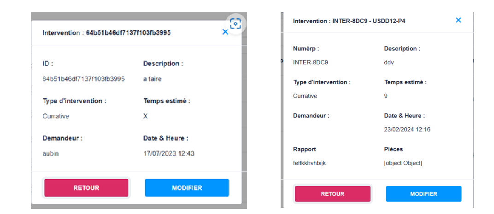
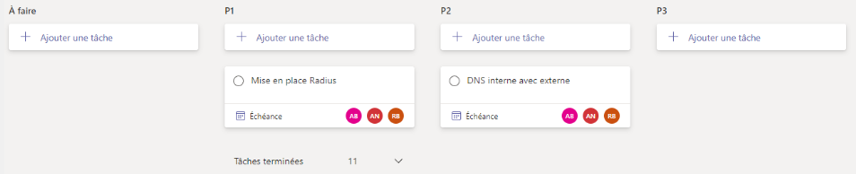
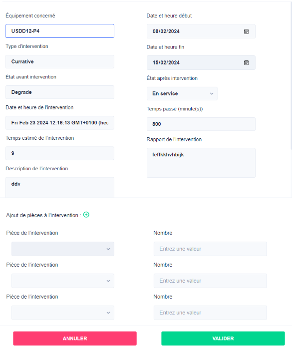

EFFSEIT est une entreprise de cybersécurité basée à Montpellier, fondée fin 2021. Elle propose des solutions de sécurité informatique sur mesure pour protéger les entreprises contre les cybermenaces. Les services proposés par EFFSEIT comprennent la protection informatique, l’accompagnement numérique, la sensibilisation et la formation, ainsi que l’audit de management de la sécurité. EFFSEIT peut également aider les entreprises à mettre en place, optimiser et sécuriser leur réseau informatique, ainsi qu’à concevoir leurs systèmes d’informations et applications. L’entreprise est à taille humaine et propose des solutions personnalisées pour répondre aux besoins et attentes de chaque client.
EFFSEIT a lancé un projet d’application de Gestion de Maintenance Assistée par Ordinateur (GMAO). En tant que développeur, j’ai eu le choix de me pencher sur le frontend ou le backend de l’application. J’ai choisi le front-end.
  